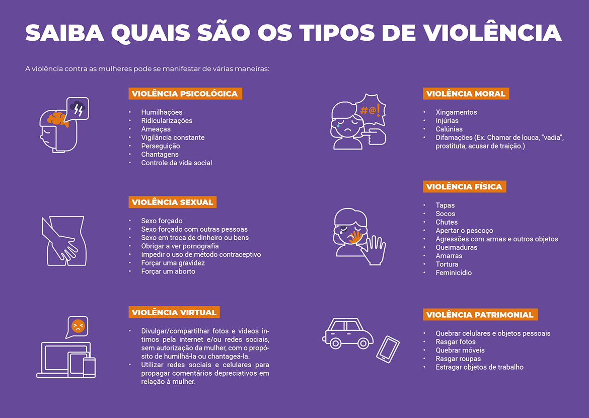

Bem-vindo!
Hoje, refletimos sobre a importância da luta contra a violência de gênero. Este dia é uma oportunidade para aumentar a conscientização sobre a violência enfrentada por mulheres em todo o mundo. A data foi escolhida em homenagem ao assassinato das irmãs Mirabal, ativistas políticas na República Dominicana, em 25 de novembro de 1960.

Recursos Úteis
O que dizem as sobreviventes
"A informação é a chave para a liberdade. Não tenha medo de buscar ajuda."